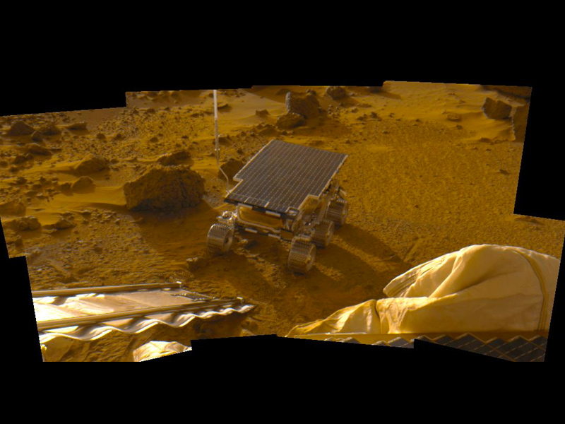

Mars is the fourth planet from the Sun and the second-smallest planet in the Solar System, being larger than only Mercury.
In English, Mars carries the name of the Roman god of war and is often referred to as the "Red Planet". The latter
refers to the effect of the iron oxide prevalent on Mars's surface, which gives it a reddish appearance (as shown), that is
distinctive among the astronomical bodies visible to the naked eye. Mars is a terrestrial planet with a thin atmosphere,
with surface features reminiscent of the impact craters of the Moon and the valleys, deserts and polar ice caps of Earth.
1 / 5
2 / 5
3 / 5
4 / 5
5 / 5

The days and seasons are comparable to those of Earth, because the rotational period as well as the tilt of the rotational
axis relative to the ecliptic plane are similar. Mars is the site of Olympus Mons, the largest volcano and highest known mountain
on any planet in the Solar System, and of Valles Marineris, one of the largest canyons in the Solar System. The smooth Borealis
basin in the Northern Hemisphere covers 40% of the planet and may be a giant impact feature. Mars has two moons, Phobos
and Deimos, which are small and irregularly shaped. These may be captured asteroids, similar to 5261 Eureka, a Mars trojan.
Mars has been explored by several uncrewed spacecraft. Mariner 4 was the first spacecraft to visit Mars; launched by NASA on
28 November 1964, it made its closest approach to the planet on 15 July 1965. Mariner 4 detected the weak Martian radiation belt,
measured at about 0.1% that of Earth, and captured the first images of another planet from deep space. The latest spacecraft
to successfully land on Mars are CNSA's Tianwen-1 lander and Zhurong rover, landed on 14 May 2021. Zhurong rover was successfully
deployed on 22 May 2021, which makes China the second country to successfully deploy a rover on Mars, after the United States.
There are investigations assessing the past habitability of Mars, as well as the possibility of extant life. Astrobiology missions
are planned, such as the European Space Agency's Rosalind Franklin rover. Liquid water on the surface of Mars cannot
exist due to low atmospheric pressure, which is less than 1% of the atmospheric pressure on Earth, except at the lowest elevations for
short periods. The two polar ice caps appear to be made largely of water. The volume of water ice in the south
polar ice cap, if melted, would be sufficient to cover the planetary surface to a depth of 11 metres (36 ft). In November 2016,
NASA reported finding a large amount of underground ice in the Utopia Planitia region. The volume of water detected has been estimated
to be equivalent to the volume of water in Lake Superior.
Mars can easily be seen from Earth with the naked eye, as can its reddish coloring. Its apparent magnitude reaches −2.94, which is
surpassed only by Venus, the Moon and the Sun. Optical ground-based telescopes are typically limited to resolving features abou
t 300 kilometres (190 mi) across when Earth and Mars are closest because of Earth's atmosphere.
Physical characteristics
Mars is approximately half the diameter of Earth, with a surface area only slightly less than the total area of Earth's dry land.
Mars is less dense than Earth, having about 15% of Earth's volume and 11% of Earth's mass, resulting in about 38% of Earth's surface
gravity. The red-orange appearance of the Martian surface is caused by iron(III) oxide, or rust. It can look like butterscotch;
other common surface colors include golden, brown, tan, and greenish, depending on the minerals present.
Internal structure
Like Earth, Mars has differentiated into a dense metallic core overlaid by less dense materials. Current models
of its interior imply a core consisting primarily of iron and nickel with about 16–17% sulfur. This iron(II) sulfide
core is thought to be twice as rich in lighter elements as Earth's. The core is surrounded by a silicate mantle that
formed many of the tectonic and volcanic features on the planet, but it appears to be dormant. Besides silicon and oxygen,
the most abundant elements in the Martian crust are iron, magnesium, aluminium, calcium, and potassium. The average thickness
of the planet's crust is about 50 kilometres (31 mi), with a maximum thickness of 125 kilometres (78 mi). Earth's crust
averages 40 kilometres (25 mi).
Mars is seismically active, with InSight recording over 450 marsquakes and related events in 2019. In 2021 it was
reported that based on eleven low-frequency Marsquakes detected by the InSight lander the core of Mars is indeed liquid and
has a radius of about 1830±40 km and a temperature around 1900–2000 K. The Martian core radius is more than half the radius
of Mars and about half the size of the Earth's core. This is somewhat larger than models predicted, suggesting that the core
contains some amount of lighter elements like oxygen and hydrogen in addition to the iron–nickel alloy and about 15% of sulfur.
The core of Mars is overlain by the rocky mantle, which, however, does not seem to have a layer analogous to the Earth's
lower mantle. The martial mantle appears to be solid down to the depth of about 500 km, where the low-velocity zone (partially
melted asthenosphere) begins. Below the asthenosphere the velocity of seismic waves starts to grow again and at the depth
of about 1050 km there lies the boundary of the transition zone. At the surface of Mars there lies a crust with the average
thickness of about 24–72 km.
Surface geology
Mars is a terrestrial planet whose surface consists of minerals containing silicon and oxygen, metals, and other
elements that typically make up rock. The Martian surface is primarily composed of tholeiitic basalt, although
parts are more silica-rich than typical basalt and may be similar to andesitic rocks on Earth, or silica glass. Regions
of low albedo suggest concentrations of plagioclase feldspar, with northern low albedo regions displaying higher than
normal concentrations of sheet silicates and high-silicon glass. Parts of the southern highlands include detectable amounts
of high-calcium pyroxenes. Localized concentrations of hematite and olivine have been found. Much of the surface is deeply
covered by finely grained iron(III) oxide dust.
Although Mars has no evidence of a structured global magnetic field, observations show that parts of the planet's
crust have been magnetized, suggesting that alternating polarity reversals of its dipole field have occurred in the past.
This paleomagnetism of magnetically susceptible minerals is similar to the alternating bands found on Earth's ocean floors.
One theory, published in 1999 and re-examined in October 2005 (with the help of the Mars Global Surveyor), is that these bands
suggest plate tectonic activity on Mars four billion years ago, before the planetary dynamo ceased to function and the planet's
magnetic field faded.
It is thought that, during the Solar System's formation, Mars was created as the result of a stochastic process of run-away
accretion of material from the protoplanetary disk that orbited the Sun. Mars has many distinctive chemical features caused by
its position in the Solar System. Elements with comparatively low boiling points, such as chlorine, phosphorus, and sulfur, are
much more common on Mars than Earth; these elements were probably pushed outward by the young Sun's energetic solar wind.
After the formation of the planets, all were subjected to the so-called "Late Heavy Bombardment". About 60% of the surface of
Mars shows a record of impacts from that era, whereas much of the remaining surface is probably underlain by immense
impact basins caused by those events. There is evidence of an enormous impact basin in the Northern Hemisphere of Mars, spanning
10,600 by 8,500 kilometres (6,600 by 5,300 mi), or roughly four times the size of the Moon's South Pole – Aitken basin, the largest
impact basin yet discovered. This theory suggests that Mars was struck by a Pluto-sized body about four billion years ago.
The event, thought to be the cause of the Martian hemispheric dichotomy, created the smooth Borealis basin that covers 40% of the planet.
The geological history of Mars can be split into many periods, but the following are the three primary periods:
Noachian period (named after Noachis Terra): Formation of the oldest extant surfaces of Mars, 4.5 to 3.5 billion years ago.
Noachian age surfaces are scarred by many large impact craters. The Tharsis bulge, a volcanic upland, is thought to have formed
during this period, with extensive flooding by liquid water late in the period.
Hesperian period (named after Hesperia Planum): 3.5 to between 3.3 and 2.9 billion years ago. The Hesperian period is marked
by the formation of extensive lava plains
Amazonian period (named after Amazonis Planitia): between 3.3 and 2.9 billion years ago to the present. Amazonian regions have
few meteorite impact craters but are otherwise quite varied. Olympus Mons formed during this period, with lava flows elsewhere on Mars.
Geological activity is still taking place on Mars. The Athabasca Valles is home to sheet-like lava flows created about 200 Mya.
Water flows in the grabens called the Cerberus Fossae occurred less than 20 Mya, indicating equally recent volcanic intrusions.
On 19 February 2008, images from the Mars Reconnaissance Orbiter showed evidence of an avalanche from a 700-metre-high (2,300 ft) cliff.
Soil
The Phoenix lander returned data showing Martian soil to be slightly alkaline and containing elements such as magnesium, sodium, potassium
and chlorine. These nutrients are found in soils on Earth, and they are necessary for growth of plants. Experiments performed by the lander
showed that the Martian soil has a basic pH of 7.7, and contains 0.6% of the salt perchlorate, concentrations that are toxic to humans.
Streaks are common across Mars and new ones appear frequently on steep slopes of craters, troughs, and valleys. The streaks are dark at
first and get lighter with age. The streaks can start in a tiny area, then spread out for hundreds of metres. They have been seen to follow
the edges of boulders and other obstacles in their path. The commonly accepted theories include that they are dark underlying layers of soil
revealed after avalanches of bright dust or dust devils. Several other explanations have been put forward, including those that involve
water or even the growth of organisms.
Hydrology
Liquid water cannot exist on the surface of Mars due to low atmospheric pressure, which is less than
1% that of Earth's, except at the lowest elevations for short periods. The two polar ice caps
appear to be made largely of water. The volume of water ice in the south polar ice cap, if melted,
would be enough to cover the entire surface of the planet with a depth of 11 metres (36 ft). A permafrost
mantle stretches from the pole to latitudes of about 60°. Large quantities of ice are thought to be trapped
within the thick cryosphere of Mars. Radar data from Mars Express and the Mars Reconnaissance Orbiter (MRO) show
large quantities of ice at both poles (July 2005) and at middle latitudes (November 2008). The Phoenix
lander directly sampled water ice in shallow Martian soil on 31 July 2008.
Landforms visible on Mars strongly suggest that liquid water has existed on the planet's surface. Huge linear swathes of
scoured ground, known as outflow channels, cut across the surface in about 25 places. These are thought to be a record of
erosion caused by the catastrophic release of water from subsurface aquifers, though some of these structures have been hypothesized
to result from the action of glaciers or lava. One of the larger examples, Ma'adim Vallis, is 700 kilometres (430 mi) long,
much greater than the Grand Canyon, with a width of 20 kilometres (12 mi) and a depth of 2 kilometres (1.2 mi) in places. It is thought
to have been carved by flowing water early in Mars's history. The youngest of these channels are thought to have formed as recently
as only a few million years ago. Elsewhere, particularly on the oldest areas of the Martian surface, finer-scale, dendritic networks
of valleys are spread across significant proportions of the landscape. Features of these valleys and their distribution strongly imply
that they were carved by runoff resulting from precipitation in early Mars history. Subsurface water flow and groundwater sapping may
play important subsidiary roles in some networks, but precipitation was probably the root cause of the incision in almost all cases.
Along crater and canyon walls, there are thousands of features that appear similar to terrestrial gullies. The gullies tend to be
in the highlands of the Southern Hemisphere and to face the Equator; all are poleward of 30° latitude. A number of authors have
suggested that their formation process involves liquid water, probably from melting ice, although others have argued for
formation mechanisms involving carbon dioxide frost or the movement of dry dust. No partially degraded gullies have formed
by weathering and no superimposed impact craters have been observed, indicating that these are young features, possibly still active.
Other geological features, such as deltas and alluvial fans preserved in craters, are further evidence for warmer, wetter
conditions at an interval or intervals in earlier Mars history. Such conditions necessarily require the widespread presence
of crater lakes across a large proportion of the surface, for which there is independent mineralogical, sedimentological and
geomorphological evidence.
Further evidence that liquid water once existed on the surface of Mars comes from the detection of specific minerals such
as hematite and goethite, both of which sometimes form in the presence of water. In 2004, Opportunity detected the mineral
jarosite. This forms only in the presence of acidic water, which demonstrates that water once existed on Mars. More recent
evidence for liquid water comes from the finding of the mineral gypsum on the surface by NASA's Mars rover Opportunity in
December 2011. It is estimated that the amount of water in the upper mantle of Mars, represented by hydroxyl ions
contained within the minerals of Mars's geology, is equal to or greater than that of Earth at 50–300 parts per million of water,
which is enough to cover the entire planet to a depth of 200–1,000 metres (660–3,280 ft).
In 2005, radar data revealed the presence of large quantities of water ice at the poles and at mid-latitudes.
The Mars rover Spirit sampled chemical compounds containing water molecules in March 2007.
On 18 March 2013, NASA reported evidence from instruments on the Curiosity rover of mineral hydration, likely hydrated
calcium sulfate, in several rock samples including the broken fragments of "Tintina" rock and "Sutton Inlier" rock as well as
in veins and nodules in other rocks like "Knorr" rock and "Wernicke" rock. Analysis using the rover's DAN instrument
provided evidence of subsurface water, amounting to as much as 4% water content, down to a depth of 60 centimetres (24 in), during
the rover's traverse from the Bradbury Landing site to the Yellowknife Bay area in the Glenelg terrain. In September 2015,
NASA announced that they had found conclusive evidence of hydrated brine flows on recurring slope lineae, based on spectrometer
readings of the darkened areas of slopes. These observations provided confirmation of earlier hypotheses based on
timing of formation and their rate of growth, that these dark streaks resulted from water flowing in the very shallow subsurface.
The streaks contain hydrated salts, perchlorates, which have water molecules in their crystal structure. The streaks
flow downhill in Martian summer, when the temperature is above −23° Celsius, and freeze at lower temperatures.
Researchers suspect that much of the low northern plains of the planet were covered with an ocean hundreds of meters deep,
though this remains controversial. In March 2015, scientists stated that such an ocean might have been the size of Earth's
Arctic Ocean. This finding was derived from the ratio of water to deuterium in the modern Martian atmosphere compared to that
ratio on Earth. The amount of Martian deuterium is eight times the amount that exists on Earth, suggesting that ancient Mars had
significantly higher levels of water. Results from the Curiosity rover had previously found a high ratio of deuterium in Gale
Crater, though not significantly high enough to suggest the former presence of an ocean. Other scientists caution that these results
have not been confirmed, and point out that Martian climate models have not yet shown that the planet was warm enough in the past
to support bodies of liquid water.
Near the northern polar cap is the 81.4 kilometres (50.6 mi) wide Korolev Crater, where the Mars Express orbiter found it to
be filled with approximately 2,200 cubic kilometres (530 cu mi) of water ice. The crater floor lies about 2 kilometres (1.2 mi)
below the rim, and is covered by a 1.8 kilometres (1.1 mi) deep central mound of permanent water ice, up to 60 kilometres (37 mi)
in diameter.
In February 2020, it was found that dark streaks called recurring slope lineae (RSL), which appear seasonably, are caused by
briny water flowing for a few days annually.
Polar caps
Mars has two permanent polar ice caps. During a pole's winter, it lies in continuous darkness, chilling the
surface and causing the deposition of 25–30% of the atmosphere into slabs of CO2 ice (dry ice). When the poles
are again exposed to sunlight, the frozen CO2 sublimes. These seasonal actions transport large amounts of dust and
water vapor, giving rise to Earth-like frost and large cirrus clouds. Clouds of water-ice were photographed by the
Opportunity rover in 2004.
The caps at both poles consist primarily (70%) of water ice. Frozen carbon dioxide accumulates as a comparatively
thin layer about one metre thick on the north cap in the northern winter only, whereas the south cap has a permanent
dry ice cover about eight metres thick. This permanent dry ice cover at the south pole is peppered by flat floored,
shallow, roughly circular pits, which repeat imaging shows are expanding by meters per year; this suggests that the
permanent CO2 cover over the south pole water ice is degrading over time. The northern polar cap has a diameter
of about 1,000 kilometres (620 mi) during the northern Mars summer, and contains about 1.6 million cubic kilometres (5.7×1016
cu ft) of ice, which, if spread evenly on the cap, would be 2 kilometres (1.2 mi) thick. (This compares to a volume of 2.85 million
cubic kilometres (1.01×1017 cu ft) for the Greenland ice sheet.) The southern polar cap has a diameter of 350 kilometres (220 mi) and a
thickness of 3 kilometres (1.9 mi). The total volume of ice in the south polar cap plus the adjacent layered deposits has been estimated
at 1.6 million cubic km. Both polar caps show spiral troughs, which recent analysis of SHARAD ice penetrating radar has shown are a
result of katabatic winds that spiral due to the Coriolis Effect.
The seasonal frosting of areas near the southern ice cap results in the formation of transparent 1-metre-thick slabs of dry ice above
the ground. With the arrival of spring, sunlight warms the subsurface and pressure from subliming CO2 builds up under a slab, elevating
and ultimately rupturing it. This leads to geyser-like eruptions of CO2 gas mixed with dark basaltic sand or dust. This process is rapid,
observed happening in the space of a few days, weeks or months, a rate of change rather unusual in geology – especially for Mars. The gas
rushing underneath a slab to the site of a geyser carves a spiderweb-like pattern of radial channels under the ice, the process being the
inverted equivalent of an erosion network formed by water draining through a single plughole.
Geography and naming of surface features
Although better remembered for mapping the Moon, Johann Heinrich Mädler and Wilhelm Beer were the first areographers.
They began by establishing that most of Mars's surface features were permanent and by more precisely determining the planet's
rotation period. In 1840, Mädler combined ten years of observations and drew the first map of Mars. Rather than giving names
to the various markings, Beer and Mädler simply designated them with letters; Meridian Bay (Sinus Meridiani) was thus feature "a".
Today, features on Mars are named from a variety of sources. Albedo features are named for classical mythology. Craters larger
than 60 km are named for deceased scientists and writers and others who have contributed to the study of Mars. Craters smaller than
60 km are named for towns and villages of the world with populations of less than 100,000. Large valleys are named for the word "Mars"
or "star" in various languages; small valleys are named for rivers.
Large albedo features retain many of the older names but are often updated to reflect new knowledge of the nature of the features.
For example, Nix Olympica (the snows of Olympus) has become Olympus Mons (Mount Olympus). The surface of Mars as seen from Earth
is divided into two kinds of areas, with differing albedo. The paler plains covered with dust and sand rich in reddish iron oxides were
once thought of as Martian "continents" and given names like Arabia Terra (land of Arabia) or Amazonis Planitia (Amazonian plain). The
dark features were thought to be seas, hence their names Mare Erythraeum, Mare Sirenum and Aurorae Sinus. The largest dark feature seen
from Earth is Syrtis Major Planum. The permanent northern polar ice cap is named Planum Boreum, whereas the southern cap is called
Planum Australe.
Mars's equator is defined by its rotation, but the location of its Prime Meridian was specified, as was Earth's (at Greenwich),
by choice of an arbitrary point; Mädler and Beer selected a line for their first maps of Mars in 1830. After the spacecraft Mariner
9 provided extensive imagery of Mars in 1972, a small crater (later called Airy-0), located in the Sinus Meridiani ("Middle Bay" or
"Meridian Bay"), was chosen by Merton Davies of the Rand Corporation for the definition of 0.0° longitude to coincide with the
original selection.
Because Mars has no oceans and hence no "sea level", a zero-elevation surface had to be selected as a reference level; this is c
alled the areoid of Mars, analogous to the terrestrial geoid. Zero altitude was defined by the height at which there is
610.5 Pa (6.105 mbar) of atmospheric pressure. This pressure corresponds to the triple point of water, and it is about 0.6% of
the sea level surface pressure on Earth (0.006 atm).
Map of quadrangles
For mapping purposes, the United States Geological Survey divides the surface of Mars into thirty cartographic
quadrangles, each named for a classical albedo feature it contains. The quadrangles can be seen and explored via
the interactive image map below.
Impact topography
The dichotomy of Martian topography is striking: northern plains flattened by lava flows contrast with the
southern highlands, pitted and cratered by ancient impacts. Research in 2008 has presented evidence regarding a
theory proposed in 1980 postulating that, four billion years ago, the Northern Hemisphere of Mars was struck by
an object one-tenth to two-thirds the size of Earth's Moon. If validated, this would make the Northern Hemisphere
of Mars the site of an impact crater 10,600 by 8,500 kilometres (6,600 by 5,300 mi) in size, or roughly the area of
Europe, Asia, and Australia combined, surpassing the South Pole–Aitken basin as the largest impact crater in the Solar System.
Mars is scarred by a number of impact craters: a total of 43,000 craters with a diameter of 5 kilometres (3.1 mi) or
greater have been found. The largest confirmed of these is the Hellas impact basin, a light albedo feature clearly
visible from Earth. Due to the smaller mass and size of Mars, the probability of an object colliding with the planet
is about half that of Earth. Mars is located closer to the asteroid belt, so it has an increased chance of being struck by
materials from that source. Mars is more likely to be struck by short-period comets, i.e., those that lie within the orbit
of Jupiter. In spite of this, there are far fewer craters on Mars compared with the Moon, because the atmosphere of Mars
provides protection against small meteors and surface modifying processes have erased some craters.
Martian craters can have a morphology that suggests the ground became wet after the meteor impacted.
Volcanoes
The shield volcano Olympus Mons (Mount Olympus) is an extinct volcano in the vast upland region Tharsis, which contains
several other large volcanoes. Olympus Mons is roughly three times the height of Mount Everest, which in comparison stands at
just over 8.8 kilometres (5.5 mi). It is either the tallest or second-tallest mountain in the Solar System, depending on
how it is measured, with various sources giving figures ranging from about 21 to 27 kilometres (13 to 17 mi) high.
Tectonic sites
The large canyon, Valles Marineris (Latin for "Mariner Valleys", also known as Agathadaemon in the old canal maps), has a
length of 4,000 kilometres (2,500 mi) and a depth of up to 7 kilometres (4.3 mi). The length of Valles Marineris is equivalent
to the length of Europe and extends across one-fifth the circumference of Mars. By comparison, the Grand Canyon on Earth is only
446 kilometres (277 mi) long and nearly 2 kilometres (1.2 mi) deep. Valles Marineris was formed due to the swelling of the Tharsis
area, which caused the crust in the area of Valles Marineris to collapse. In 2012, it was proposed that Valles Marineris is not
just a graben, but a plate boundary where 150 kilometres (93 mi) of transverse motion has occurred, making Mars a planet with
possibly a two-tectonic plate arrangement.
Holes
Images from the Thermal Emission Imaging System (THEMIS) aboard NASA's Mars Odyssey orbiter have revealed seven possible
cave entrances on the flanks of the volcano Arsia Mons. The caves, named after loved ones of their discoverers, are
collectively known as the "seven sisters". Cave entrances measure from 100 to 252 metres (328 to 827 ft) wide and they
are estimated to be at least 73 to 96 metres (240 to 315 ft) deep. Because light does not reach the floor of most of the caves,
it is possible that they extend much deeper than these lower estimates and widen below the surface. "Dena" is the only exception;
its floor is visible and was measured to be 130 metres (430 ft) deep. The interiors of these caverns may be protected from micrometeoroids,
UV radiation, solar flares and high energy particles that bombard the planet's surface.
Atmosphere
Mars lost its magnetosphere 4 billion years ago, possibly because of numerous asteroid strikes, so the solar wind
interacts directly with the Martian ionosphere, lowering the atmospheric density by stripping away atoms from the outer layer.
Both Mars Global Surveyor and Mars Express have detected ionised atmospheric particles trailing off into space behind Mars,
and this atmospheric loss is being studied by the MAVEN orbiter. Compared to Earth, the atmosphere of Mars is quite rarefied. Atmospheric
pressure on the surface today ranges from a low of 30 Pa (0.0044 psi) on Olympus Mons to over 1,155 Pa (0.1675 psi) in Hellas Planitia,
with a mean pressure at the surface level of 600 Pa (0.087 psi). The highest atmospheric density on Mars is equal to that found 35
kilometres (22 mi) above Earth's surface. The resulting mean surface pressure is only 0.6% of that of Earth 101.3 kPa (14.69 psi).
The scale height of the atmosphere is about 10.8 kilometres (6.7 mi), which is higher than Earth's, 6 kilometres (3.7 mi), because
the surface gravity of Mars is only about 38% of Earth's, an effect offset by both the lower temperature and 50% higher average molecular
weight of the atmosphere of Mars.
The atmosphere of Mars consists of about 96% carbon dioxide, 1.93% argon and 1.89% nitrogen along with traces of oxygen and water.
The atmosphere is quite dusty, containing particulates about 1.5 µm in diameter which give the Martian sky a tawny color when seen from the
surface. It may take on a pink hue due to iron oxide particles suspended in it.
Methane
Methane has been detected in the Martian atmosphere; it occurs in extended plumes, and the profiles imply that the methane
is released from discrete regions. The concentration of methane fluctuates from about 0.24 ppb during the northern winter to about
0.65 ppb during the summer.
Estimates of its lifetime range from 0.6 to 4 years, so its presence indicates that an active source of the gas must be present.
Methane could be produced by non-biological process such as serpentinization involving water, carbon dioxide, and the mineral olivine,
which is known to be common on Mars. Methanogenic microbial life forms in the subsurface are among possible sources. But even if
rover missions determine that microscopic Martian life is the source of the methane, the life forms likely reside far below the surface,
outside of the rover's reach.
Aurora
In 1994, the European Space Agency's Mars Express found an ultraviolet glow coming from "magnetic umbrellas" in the Southern
Hemisphere. Mars does not have a global magnetic field which guides charged particles entering the atmosphere. Mars has multiple
umbrella-shaped magnetic fields mainly in the Southern Hemisphere, which are remnants of a global field that decayed billions of
years ago.
In late December 2014, NASA's MAVEN spacecraft detected evidence of widespread auroras in Mars's Northern Hemisphere and descended
to approximately 20–30° North latitude of Mars's equator. The particles causing the aurora penetrated into the Martian atmosphere,
creating auroras below 100 km above the surface, Earth's auroras range from 100 km to 500 km above the surface. Magnetic fields in
the solar wind drape over Mars, into the atmosphere, and the charged particles follow the solar wind magnetic field lines into the
atmosphere, causing auroras to occur outside the magnetic umbrellas.
On 18 March 2015, NASA reported the detection of an aurora that is not fully understood and an unexplained dust cloud in the
atmosphere of Mars.
In September 2017, NASA reported radiation levels on the surface of the planet Mars were temporarily doubled, and were associated
with an aurora 25 times brighter than any observed earlier, due to a massive, and unexpected, solar storm in the middle of the month.
Climate
Of all the planets in the Solar System, the seasons of Mars are the most Earth-like, due to the similar tilts of the two planets'
rotational axes. The lengths of the Martian seasons are about twice those of Earth's because Mars's greater distance from the Sun leads
to the Martian year being about two Earth years long. Martian surface temperatures vary from lows of about −143 °C (−225 °F) at the winter
polar caps to highs of up to 35 °C (95 °F) in equatorial summer. The wide range in temperatures is due to the thin atmosphere which
cannot store much solar heat, the low atmospheric pressure, and the low thermal inertia of Martian soil. The planet is 1.52 times as
far from the Sun as Earth, resulting in just 43% of the amount of sunlight.
If Mars had an Earth-like orbit, its seasons would be similar to Earth's because its axial tilt is similar to Earth's. The comparatively
large eccentricity of the Martian orbit has a significant effect. Mars is near perihelion when it is summer in the Southern Hemisphere and
winter in the north, and near aphelion when it is winter in the Southern Hemisphere and summer in the north. As a result, the seasons in
the Southern Hemisphere are more extreme and the seasons in the northern are milder than would otherwise be the case. The summer temperatures
in the south can be warmer than the equivalent summer temperatures in the north by up to 30 °C (54 °F).
Mars has the largest dust storms in the Solar System, reaching speeds of over 160 km/h (100 mph). These can vary from a storm over a
small area, to gigantic storms that cover the entire planet. They tend to occur when Mars is closest to the Sun, and have been shown to
increase the global temperature.
Orbit and rotation
Mars's average distance from the Sun is roughly 230 million km (143 million mi), and its orbital period is 687 (Earth) days.
The solar day (or sol) on Mars is only slightly longer than an Earth day: 24 hours, 39 minutes, and 35.244 seconds. A Martian year
is equal to 1.8809 Earth years, or 1 year, 320 days, and 18.2 hours.
The axial tilt of Mars is 25.19° relative to its orbital plane, which is similar to the axial tilt of Earth. As a result, Mars
has seasons like Earth, though on Mars they are nearly twice as long because its orbital period is that much longer. In the present
day epoch, the orientation of the north pole of Mars is close to the star Deneb.
Mars has a relatively pronounced orbital eccentricity of about 0.09; of the seven other planets in the Solar System, only Mercury
has a larger orbital eccentricity. It is known that in the past, Mars has had a much more circular orbit. At one point, 1.35 million
Earth years ago, Mars had an eccentricity of roughly 0.002, much less than that of Earth today. Mars's cycle of eccentricity is
96,000 Earth years compared to Earth's cycle of 100,000 years. Mars has a much longer cycle of eccentricity, with a period of 2.2
million Earth years, and this overshadows the 96,000-year cycle in the eccentricity graphs. For the last 35,000
years, the orbit of Mars has been getting slightly more eccentric because of the gravitational effects of the other planets. The closest
distance between Earth and Mars will continue to mildly decrease for the next 25,000 years.
Habitability and search for life
The current understanding of planetary habitability – the ability of a world to develop environmental conditions favorable to
the emergence of life – favors planets that have liquid water on their surface. Most often this requires the orbit of a planet to
lie within the habitable zone, which for the Sun extends from just beyond Venus to about the semi-major axis of Mars. During
perihelion, Mars dips inside this region, but Mars's thin (low-pressure) atmosphere prevents liquid water from existing over large
regions for extended periods. The past flow of liquid water demonstrates the planet's potential for habitability. Recent evidence
has suggested that any water on the Martian surface may have been too salty and acidic to support regular terrestrial life.
The lack of a magnetosphere and the extremely thin atmosphere of Mars are a challenge: the planet has little heat transfer across
its surface, poor insulation against bombardment of the solar wind and insufficient atmospheric pressure to retain water in a liquid
form (water instead sublimes to a gaseous state). Mars is nearly, or perhaps totally, geologically dead; the end of volcanic activity
has apparently stopped the recycling of chemicals and minerals between the surface and interior of the planet.
In situ investigations have been performed on Mars by the Viking landers, Spirit and Opportunity rovers, Phoenix lander, and
Curiosity rover. Evidence suggests that the planet was once significantly more habitable than it is today, but whether living
organisms ever existed there remains unknown. The Viking probes of the mid-1970s carried experiments designed to detect microorganisms
in Martian soil at their respective landing sites and had positive results, including a temporary increase of CO2 production on exposure
to water and nutrients. This sign of life was later disputed by scientists, resulting in a continuing debate, with NASA scientist Gilbert
Levin asserting that Viking may have found life. A re-analysis of the Viking data, in light of modern knowledge of extremophile forms of
life, has suggested that the Viking tests were not sophisticated enough to detect these forms of life. The tests could even have killed
a (hypothetical) life form. Tests conducted by the Phoenix Mars lander have shown that the soil has an alkaline pH and it contains
magnesium, sodium, potassium and chloride. The soil nutrients may be able to support life, but life would still have to be shielded
from the intense ultraviolet light. A recent analysis of martian meteorite EETA79001 found 0.6 ppm ClO−4, 1.4 ppm ClO−3, and 16 ppm
NO−3, most likely of Martian origin. The ClO−3 suggests the presence of other highly oxidizing oxychlorines, such as ClO−2 or ClO, produced
both by UV oxidation of Cl and X-ray radiolysis of ClO−4. Thus, only highly refractory and/or well-protected (sub-surface) organics or life
forms are likely to survive.
A 2014 analysis of the Phoenix WCL showed that the Ca(ClO4)2 in the Phoenix soil has not interacted with liquid water of any
form, perhaps for as long as 600 million years. If it had, the highly soluble Ca(ClO4)2 in contact with liquid water would have
formed only CaSO4. This suggests a severely arid environment, with minimal or no liquid water interaction.
Scientists have proposed that carbonate globules found in meteorite ALH84001, which is thought to have originated from Mars,
could be fossilized microbes extant on Mars when the meteorite was blasted from the Martian surface by a meteor strike some 15
million years ago. This proposal has been met with skepticism, and an exclusively inorganic origin for the shapes has been proposed.
Small quantities of methane and formaldehyde detected by Mars orbiters are both claimed to be possible evidence for life, as these
chemical compounds would quickly break down in the Martian atmosphere. Alternatively, these compounds may instead be replenished
by volcanic or other geological means, such as serpentinite.
Impact glass, formed by the impact of meteors, which on Earth can preserve signs of life, has been found on the surface of the impact
craters on Mars. Likewise, the glass in impact craters on Mars could have preserved signs of life if life existed at the site.
In May 2017, evidence of the earliest known life on land on Earth may have been found in 3.48-billion-year-old geyserite and other
related mineral deposits (often found around hot springs and geysers) uncovered in the Pilbara Craton of Western Australia. These findings
may be helpful in deciding where best to search for early signs of life on the planet Mars.
In early 2018, media reports speculated that certain rock features at a site called Jura looked like a type of fossil, but project
scientists say the formations likely resulted from a geological process at the bottom of an ancient drying lakebed, and are related
to mineral veins in the area similar to gypsum crystals.
On 7 June 2018, NASA announced that the Curiosity rover had discovered organic compounds in sedimentary rocks dating to three billion
years old, indicating that some of the building blocks for life were present.
In July 2018, scientists reported the discovery of a subglacial lake on Mars, the first known stable body of water on the planet.
It sits 1.5 km (0.9 mi) below the surface at the base of the southern polar ice cap and is about 20 kilometres (12 mi) wide.
The lake was discovered using the MARSIS radar on board the Mars Express orbiter, and the profiles were collected between May 2012
and December 2015. The lake is centered at 193° East, 81° South, a flat area that does not exhibit any peculiar topographic
characteristics. It is mostly surrounded by higher ground except on its eastern side, where there is a depression.
Moons
Mars has two relatively small (compared to Earth's) natural moons, Phobos (about 22 kilometres (14 mi) in diameter)
and Deimos (about 12 kilometres (7.5 mi) in diameter), which orbit close to the planet. Asteroid capture is a long-favored
theory, but their origin remains uncertain. Both satellites were discovered in 1877 by Asaph Hall; they are named after
the characters Phobos (panic/fear) and Deimos (terror/dread), who, in Greek mythology, accompanied their father Ares, god of
war, into battle. Mars was the Roman equivalent to Ares. In modern Greek, the planet retains its ancient name Ares
From the surface of Mars, the motions of Phobos and Deimos appear different from that of the Moon. Phobos rises in the west,
sets in the east, and rises again in just 11 hours. Deimos, being only just outside synchronous orbit – where the orbital period
would match the planet's period of rotation – rises as expected in the east but slowly. Despite the 30-hour orbit of Deimos, 2.7
days elapse between its rise and set for an equatorial observer, as it slowly falls behind the rotation of Mars.
Because the orbit of Phobos is below synchronous altitude, the tidal forces from the planet Mars are gradually lowering its orbit.
In about 50 million years, it could either crash into Mars's surface or break up into a ring structure around the planet.
The origin of the two moons is not well understood. Their low albedo and carbonaceous chondrite composition have been regarded
as similar to asteroids, supporting the capture theory. The unstable orbit of Phobos would seem to point towards a relatively recent
capture. But both have circular orbits, near the equator, which is unusual for captured objects and the required capture dynamics are
complex. Accretion early in the history of Mars is plausible, but would not account for a composition resembling asteroids rather than
Mars itself, if that is confirmed.
A third possibility is the involvement of a third body or a type of impact disruption. More-recent lines of evidence for Phobos
having a highly porous interior, and suggesting a composition containing mainly phyllosilicates and other minerals known from Mars,
point toward an origin of Phobos from material ejected by an impact on Mars that reaccreted in Martian orbit, similar to the prevailing
theory for the origin of Earth's moon. Although the VNIR spectra of the moons of Mars resemble those of outer-belt asteroids, the thermal
infrared spectra of Phobos are reported to be inconsistent with chondrites of any class.
Mars may have moons smaller than 50 to 100 metres (160 to 330 ft) in diameter, and a dust ring is predicted to exist between Phobos and
Deimos.
Exploration
Dozens of crewless spacecraft, including orbiters, landers, and rovers, have been sent to Mars by the Soviet Union,
the United States, Europe, India, the United Arab Emirates, and China to study the planet's surface, climate, and geology.
As of 2021, Mars is host to fourteen functioning spacecraft: eight in orbit – 2001 Mars Odyssey, Mars Express, Mars
Reconnaissance Orbiter, MAVEN, Mars Orbiter Mission, ExoMars Trace Gas Orbiter, the Hope orbiter, and the Tianwen-1 orbiter –
and six on the surface – the Mars Science Laboratory Curiosity rover, the InSight lander, the Perseverance rover, the Ingenuity
helicopter, the Tianwen-1 lander, and the Zhurong rover. The public can request images of Mars via the Mars Reconnaissance Orbiter's
HiWish program.
The Mars Science Laboratory, named Curiosity, launched on 26 November 2011, and reached Mars on 6 August 2012 UTC. It is larger and more
advanced than the Mars Exploration Rovers, with a movement rate up to 90 metres (300 ft) per hour. Experiments include a laser chemical
sampler that can deduce the make-up of rocks at a distance of 7 metres (23 ft). On 10 February 2013, the Curiosity rover obtained the
first deep rock samples ever taken from another planetary body, using its on-board drill. The same year, it discovered that Mars's soil
contains between 1.5% and 3% water by mass (albeit attached to other compounds and thus not freely accessible). Observations by the Mars
Reconnaissance Orbiter had previously revealed the possibility of flowing water during the warmest months on Mars.
On 24 September 2014, Mars Orbiter Mission (MOM), launched by the Indian Space Research Organisation (ISRO), reached Mars orbit. ISRO
launched MOM on 5 November 2013, with the aim of analyzing the Martian atmosphere and topography. The Mars Orbiter Mission used a Hohmann
transfer orbit to escape Earth's gravitational influence and catapult into a nine-month-long voyage to Mars. The mission is the first successful
Asian interplanetary mission.
The European Space Agency, in collaboration with Roscosmos, launched the ExoMars Trace Gas Orbiter and Schiaparelli lander on 14
March 2016. While the Trace Gas Orbiter successfully entered Mars orbit on 19 October 2016, Schiaparelli crashed during its landing attempt.
In May 2018, NASA's InSight lander was launched, along with the twin MarCO CubeSats that flew by Mars and acted as telemetry relays
during the landing. The mission arrived at Mars in November 2018. InSight detected potential seismic activity (a "marsquake") in April 2019.
In 2019, MAVEN spacecraft mapped high-altitude global wind patterns at Mars for the first time. It was discovered that the
winds which are miles above the surface retained information about the land forms below.
The United Arab Emirates' Mars Hope orbiter was launched on 19 July 2020, and successfully entered orbit around Mars on 9 February
2021. The probe will conduct a global study of the Martian atmosphere. With this accomplishment, UAE became the second country,
after India, to reach Mars on its first attempt.
NASA launched the Mars 2020 mission on 30 July 2020. The Perseverance rover and the Ingenuity helicopter successfully landed on
the surface of Mars on 18 February 2021. The mission will cache samples for future retrieval and return of them to Earth.
China's Tianwen-1 lander-rover vehicle successfully landed on Mars on 14 May 2021 (15 May Beijing Time).
Viewing
he mean apparent magnitude of Mars is +0.71 with a standard deviation of 1.05. Because the orbit of Mars is eccentric,
the magnitude at opposition from the Sun can range from about −3.0 to −1.4. The minimum brightness is magnitude +1.86 when
the planet is near aphelion and in conjunction with the Sun. At its brightest, Mars (along with Jupiter) is second only to Venus
in luminosity. Mars usually appears distinctly yellow, orange, or red. NASA's Spirit rover has taken pictures of a greenish-brown,
mud-colored landscape with blue-grey rocks and patches of light red sand. When farthest away from Earth, it is more than seven times
farther away than when it is closest. When least favorably positioned, it can be lost in the Sun's glare for months at a time. At its most
favorable times — at 15-year or 17-year intervals, and always between late July and late September — a lot of surface detail can be seen with
a telescope. Especially noticeable, even at low magnification, are the polar ice caps.
As Mars approaches opposition, it begins a period of retrograde motion, which means it will appear to move backwards in a looping motion
with respect to the background stars. The duration of this retrograde motion lasts for about 72 days, and Mars reaches its peak luminosity
in the middle of this motion.
Closest approaches
Relative
The point at which Mars's geocentric longitude is 180° different from the Sun's is known as opposition, which is near the time of closest
approach to Earth. The time of opposition can occur as much as 8.5 days away from the closest approach. The distance at close approach
varies between about 54 and 103 million km (34 and 64 million mi) due to the planets' elliptical orbits, which causes comparable variation
in angular size. The second-to-last Mars opposition occurred on 27 July 2018, at a distance of about 58 million km (36 million mi).
The last Mars opposition occurred on 13 October 2020, at a distance of about 63 million km (39 million mi). The average time between
the successive oppositions of Mars, its synodic period, is 780 days; but the number of days between the dates of successive oppositions
can range from 764 to 812.
As Mars approaches opposition it begins a period of retrograde motion, which makes it appear to move backwards in a looping motion
relative to the background stars. The duration of this retrograde motion is about 72 days.
Absolute, around the present time
Mars made its closest approach to Earth and maximum apparent brightness in nearly 60,000 years, 55,758,006 km (0.37271925 AU;
34,646,419 mi), magnitude −2.88, on 27 August 2003, at 09:51:13 UTC. This occurred when Mars was one day from opposition and about
three days from its perihelion, making it particularly easy to see from Earth. The last time it came so close is estimated to have
been on 12 September 57,617 BC, the next time being in 2287. This record approach was only slightly closer than other recent
close approaches. For instance, the minimum distance on 22 August 1924, was 0.37285 AU, and the minimum distance on 24 August 2208,
will be 0.37279 AU.
Every 15 to 17 years, Mars comes into opposition near its perihelion. These perihelic oppositions make a closer approach to earth
than other oppositions which occur every 2.1 years. Mars comes into perihelic opposition in 2003, 2018 and 2035, with 2020 and 2033
being close to perihelic opposition.